Figs prefer a Mediterranean or subtropical climate. They thrive in regions with hot, dry summers and mild, wet winters. They are well-suited to areas with temperatures ranging from 20 to 30 degrees Celsius (68 to 86 degrees Fahrenheit) during the growing season.
Figs are adaptable to various soil types, but they prefer well-draining soil. Sandy or loamy soils with a slightly acidic to neutral pH are suitable. Good drainage is essential to prevent waterlogging, which can lead to root rot.
While fig trees are drought-tolerant once established, they benefit from regular watering, especially during dry spells. However, it's crucial to avoid waterlogged conditions, as figs are susceptible to root diseases in overly wet soil.
Regular pruning helps maintain the shape of the tree, improves air circulation, and encourages fruit production. Prune fig trees during the dormant season (winter) to remove dead or diseased wood
Applying a layer of organic mulch around the base of the tree helps conserve soil moisture, suppress weeds, and regulate soil temperature.
Fig cultivation in India is widespread, and the fruit is grown in various states across the country. However, certain states are known for being more conducive to fig cultivation due to their climate and soil conditions. like Maharastra,Gujarat,
Karnataka,Tamil nadu,Uttar pradesh.
అత్తిపండ్లు మధ్యధరా లేదా ఉపఉష్ణమండల వాతావరణాన్ని ఇష్టపడతాయి. వేడి, పొడి వేసవి మరియు తేలికపాటి, తడి శీతాకాలాలు ఉన్న ప్రాంతాల్లో ఇవి వృద్ధి చెందుతాయి. పెరుగుతున్న కాలంలో ఉష్ణోగ్రతలు 20 నుండి 30 డిగ్రీల సెల్సియస్ (68 నుండి 86 డిగ్రీల ఫారెన్హీట్) వరకు ఉండే ప్రాంతాలకు ఇవి బాగా సరిపోతాయి.
అత్తి పండ్లను వివిధ రకాల నేలలకు అనుకూలం, కానీ అవి బాగా ఎండిపోయే మట్టిని ఇష్టపడతాయి. కొద్దిగా ఆమ్లం నుండి తటస్థ pH వరకు ఉండే ఇసుక లేదా లోమీ నేలలు అనుకూలం. నీటి ఎద్దడిని నివారించడానికి మంచి పారుదల అవసరం, ఇది రూట్ తెగులుకు దారితీస్తుంది.
అంజూరపు చెట్లు ఒకసారి స్థాపించబడినప్పుడు కరువును తట్టుకోగలవు, ప్రత్యేకించి పొడి కాలాల్లో అవి క్రమం తప్పకుండా నీరు త్రాగుట నుండి ప్రయోజనం పొందుతాయి. ఏది ఏమయినప్పటికీ, అత్తి పండ్లను అధిక తేమతో కూడిన నేలలో మూల వ్యాధులకు గురయ్యే అవకాశం ఉన్నందున, నీటితో నిండిన పరిస్థితులను నివారించడం చాలా ముఖ్యం.
రెగ్యులర్ కత్తిరింపు చెట్టు ఆకారాన్ని నిర్వహించడానికి సహాయపడుతుంది, గాలి ప్రసరణను మెరుగుపరుస్తుంది మరియు పండ్ల ఉత్పత్తిని ప్రోత్సహిస్తుంది. చనిపోయిన లేదా వ్యాధిగ్రస్తులైన కలపను తొలగించడానికి నిద్రాణమైన కాలంలో (శీతాకాలం) అత్తి చెట్లను కత్తిరించండి
చెట్టు పునాది చుట్టూ సేంద్రీయ రక్షక కవచం యొక్క పొరను వర్తింపజేయడం వలన నేల తేమను సంరక్షించడం, కలుపు మొక్కలను అణచివేయడం మరియు నేల ఉష్ణోగ్రతను నియంత్రించడంలో సహాయపడుతుంది.
భారతదేశంలో అత్తి సాగు విస్తృతంగా ఉంది మరియు దేశవ్యాప్తంగా వివిధ రాష్ట్రాల్లో పండు పండుతుంది. అయినప్పటికీ, కొన్ని రాష్ట్రాలు వాటి వాతావరణం మరియు నేల పరిస్థితుల కారణంగా అంజూర సాగుకు మరింత అనుకూలంగా ఉంటాయి. మహారాష్ట్ర, గుజరాత్, కర్నాటక, తమిళనాడు, ఉత్తరప్రదేశ్ వంటివి.
6. PINEAPPLE / 6.అనాస పండు
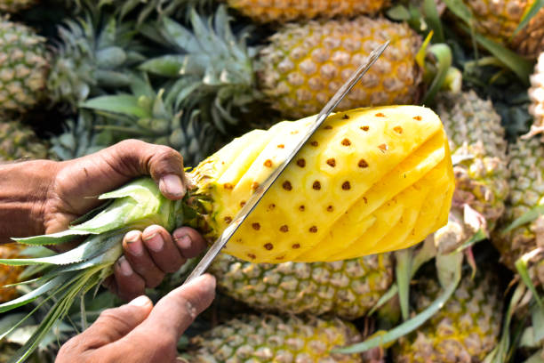
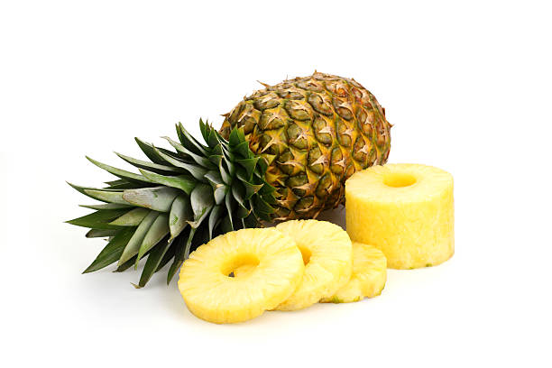
Pineapple needs a well-drained, sandy-loam soil with good organic matter.
Provide regular and consistent irrigation, especially during dry periods. Pineapples are drought-tolerant but benefit from sufficient water for optimal growth.
Keep the plantation free from weeds, as they can compete for nutrients and water.
Monitor for pests such as mealybugs and scales. Use appropriate pesticides if necessary.Common diseases include heart rot and root rot preventive measures include proper drainage and disease-resistant varieties.Handle harvested pineapples with care to prevent bruising
Store or transport the fruit in well-ventilated containers.
పైనాపిల్కు మంచి సేంద్రియ పదార్థంతో బాగా ఎండిపోయిన, ఇసుక-లోమ్ నేల అవసరం. క్రమమైన మరియు స్థిరమైన నీటిపారుదలని అందించండి, ముఖ్యంగా పొడి కాలంలో. పైనాపిల్స్ కరువును తట్టుకోగలవు, అయితే సరైన పెరుగుదలకు తగినంత నీటి నుండి ప్రయోజనం పొందుతాయి.
మొక్కలను కలుపు మొక్కలు లేకుండా ఉంచండి, ఎందుకంటే అవి పోషకాలు మరియు నీటి కోసం పోటీపడతాయి.
మీలీబగ్స్ మరియు స్కేల్స్ వంటి తెగుళ్ళ కోసం మానిటర్ చేయండి. అవసరమైతే తగిన పురుగుమందులను ఉపయోగించండి.సాధారణ వ్యాధులు గుండె తెగులు మరియు వేరు తెగులు; నివారణ చర్యలు సరైన పారుదల మరియు వ్యాధి-నిరోధక రకాలు. కోయబడిన పైనాపిల్స్ను గాయాలను నివారించడానికి జాగ్రత్తగా నిర్వహించండి.పండ్లను బాగా వెంటిలేషన్ చేసిన కంటైనర్లలో నిల్వ చేయండి లేదా రవాణా చేయండి.
7. CUSTARDAPPLE / 7.సీతాఫలం
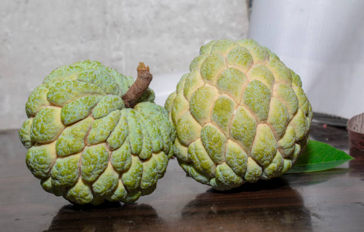
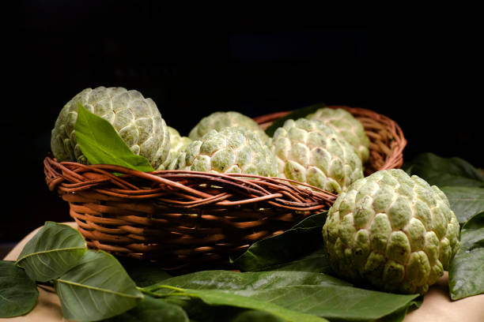
Custard apples thrive in tropical and subtropical climates with temperatures between 25-30°C (77-86°F).
They prefer well-drained, sandy-loam soil rich in organic matter. The soil should have a slightly acidic to neutral pH.Plant custard apple trees in a location that receives full sunlight.Custard apples require regular watering, especially during dry periods. However, they are sensitive to waterlogging, so well-drained soil is crucial.
Prune the trees to shape them and remove dead or diseased branches. This helps in improving air circulation and sunlight penetration.Monitor for pests such as aphids and fruit borers. Use organic or chemical pesticides as needed.Common diseases include anthracnose and powdery mildew. Fungicides can be used for prevention and control.
Custard apples are ready for harvest when the skin turns slightly yellowish-green, and the fruit gives a little when gently pressed.Harvest the fruit with a small portion of the stem attached using pruning shears.
సీతాఫలాలు ఉష్ణమండల మరియు ఉపఉష్ణమండల వాతావరణంలో 25-30°C (77-86°F) మధ్య ఉష్ణోగ్రతలతో వృద్ధి చెందుతాయి.
వారు బాగా ఎండిపోయిన, సేంద్రీయ పదార్థంతో కూడిన ఇసుక-లోమ్ మట్టిని ఇష్టపడతారు. నేల కొద్దిగా ఆమ్లత్వం నుండి తటస్థ pH కలిగి ఉండాలి. పూర్తి సూర్యకాంతి పొందే ప్రదేశంలో సీతాఫలం చెట్లను నాటండి. సీతాఫలాలకు ముఖ్యంగా పొడి కాలంలో క్రమం తప్పకుండా నీరు త్రాగుట అవసరం. అయినప్పటికీ, అవి నీటి ఎండిపోవడానికి సున్నితంగా ఉంటాయి, కాబట్టి బాగా ఎండిపోయిన నేల చాలా ముఖ్యమైనది.
చెట్లను కత్తిరించడానికి వాటిని కత్తిరించండి మరియు చనిపోయిన లేదా వ్యాధిగ్రస్తులైన కొమ్మలను తొలగించండి. ఇది గాలి ప్రసరణ మరియు సూర్యకాంతి వ్యాప్తిని మెరుగుపరచడంలో సహాయపడుతుంది. అఫిడ్స్ మరియు పండ్ల తొలుచు పురుగుల వంటి తెగుళ్లను పర్యవేక్షించండి. అవసరమైన విధంగా సేంద్రీయ లేదా రసాయన పురుగుమందులను ఉపయోగించండి. సాధారణ వ్యాధులలో ఆంత్రాక్నోస్ మరియు బూజు తెగులు ఉన్నాయి. నివారణ మరియు నియంత్రణ కోసం శిలీంద్రనాశకాలను ఉపయోగించవచ్చు.
సీతాఫలం చర్మం కొద్దిగా పసుపు-ఆకుపచ్చ రంగులోకి మారినప్పుడు కోతకు సిద్ధంగా ఉంటుంది మరియు మెత్తగా నొక్కినప్పుడు పండు కొద్దిగా ఇస్తుంది. కత్తిరింపు కత్తెరను ఉపయోగించి కాండం యొక్క చిన్న భాగాన్ని జోడించి పండు కోయండి.
8. JACKFRUIT / 8.పనసపండు
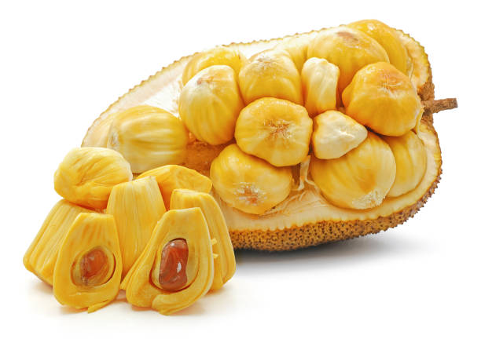
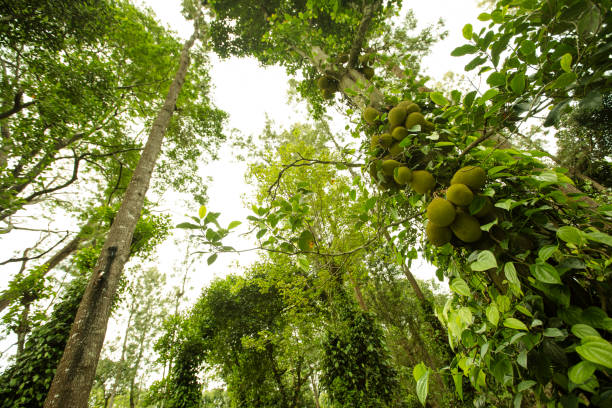
Jackfruit trees thrive in tropical lowland regions with a warm and humid climate.
The soil should be well-drained and rich in organic matter. Jackfruit trees can tolerate a variety of soil types but prefer slightly acidic to neutral soil.
Jackfruit trees are usually propagated from seeds. Plant seeds directly in the soil or in seedling trays.
Transplant seedlings into the field after they have developed a few leaves. Jackfruit trees need regular watering, especially during dry periods. However, they are tolerant of short periods of drought.
Keep an eye out for pests such as aphids, mealybugs, and scales. Use organic or chemical pesticides as needed.
Common diseases include leaf spot and anthracnose. Fungicides can be used for prevention and control.Handle jackfruits with care to avoid bruising.
Store them in a cool, well-ventilated place. Jackfruits are perishable and should be consumed or sold shortly after harvesting.
జాక్ఫ్రూట్ చెట్లు వెచ్చని మరియు తేమతో కూడిన వాతావరణంతో ఉష్ణమండల లోతట్టు ప్రాంతాలలో వృద్ధి చెందుతాయి.
నేల బాగా ఎండిపోయి సేంద్రియ పదార్థంతో సమృద్ధిగా ఉండాలి. జాక్ఫ్రూట్ చెట్లు వివిధ రకాల నేలలను తట్టుకోగలవు కానీ తటస్థ నేల కంటే కొద్దిగా ఆమ్లతను ఇష్టపడతాయి.
జాక్ఫ్రూట్ చెట్లు సాధారణంగా విత్తనాల నుండి ప్రచారం చేయబడతాయి. విత్తనాలను నేరుగా మట్టిలో లేదా విత్తనాల ట్రేలలో నాటండి.
కొన్ని ఆకులు ఏర్పడిన తర్వాత వాటిని పొలంలోకి మార్పిడి చేయండి. జాక్ఫ్రూట్ చెట్లకు క్రమం తప్పకుండా నీరు త్రాగుట అవసరం, ముఖ్యంగా పొడి కాలంలో. అయినప్పటికీ, అవి తక్కువ వ్యవధిలో కరువును తట్టుకుంటాయి.
అఫిడ్స్, మీలీబగ్స్ మరియు పొలుసులు వంటి తెగుళ్ళ కోసం ఒక కన్ను వేసి ఉంచండి. అవసరాన్ని బట్టి సేంద్రీయ లేదా రసాయన పురుగుమందులను వాడండి.
సాధారణ వ్యాధులు ఆకు మచ్చ మరియు ఆంత్రాక్నోస్. నివారణ మరియు నియంత్రణ కోసం శిలీంద్రనాశకాలను ఉపయోగించవచ్చు.
వాటిని చల్లని, బాగా వెంటిలేషన్ చేసిన ప్రదేశంలో నిల్వ చేయండి. జాక్ఫ్రూట్స్ పాడైపోయేవి మరియు పండించిన వెంటనే వాటిని తినాలి లేదా విక్రయించాలి.
9. BANANA / 9.అరటిపండు


Bananas thrive in tropical and subtropical climates. They require a warm environment with temperatures between 20 to 30 degrees Celsius (68 to 86 degrees Fahrenheit).
Well-drained, loamy soil rich in organic matter is ideal. Bananas prefer slightly acidic to neutral soil.Bananas are propagated through suckers, which are shoots that grow at the base of the plant. Select healthy suckers for planting.
Cut the suckers with a sharp knife, ensuring they have a portion of the rhizome attached.Plant the banana suckers in a location that receives full sunlight.Bananas need consistent watering, especially during dry periods. They are relatively tolerant of occasional waterlogging.
Keep the soil consistently moist but not waterlogged.Apply organic mulch around the base of the plants to retain moisture, suppress weeds, and regulate soil temperature.Prune the plants to remove dead or damaged leaves. This helps improve air circulation and reduces the risk of diseases.
Bananas are typically ready for harvest when they change color from green to yellow, and the fruit is plump and firm.Cut the bunch with a sharp knife, leaving a portion of the stem attached.
అరటిపండ్లు ఉష్ణమండల మరియు ఉపఉష్ణమండల వాతావరణంలో వృద్ధి చెందుతాయి. వారికి 20 నుండి 30 డిగ్రీల సెల్సియస్ (68 నుండి 86 డిగ్రీల ఫారెన్హీట్) మధ్య ఉష్ణోగ్రతలతో వెచ్చని వాతావరణం అవసరం.
బాగా ఎండిపోయిన, సేంద్రీయ పదార్థాలు అధికంగా ఉండే లోమీ నేల అనువైనది. అరటిపండ్లు తటస్థ మట్టికి కొద్దిగా ఆమ్లాన్ని ఇష్టపడతాయి.అరటిపండ్లు సక్కర్స్ ద్వారా ప్రచారం చేయబడతాయి, ఇవి మొక్క యొక్క బేస్ వద్ద పెరిగే రెమ్మలు. నాటడం కోసం ఆరోగ్యకరమైన సక్కర్లను ఎంచుకోండి.
సక్కర్లను పదునైన కత్తితో కత్తిరించండి, అవి రైజోమ్లో కొంత భాగాన్ని కలిగి ఉన్నాయని నిర్ధారించుకోండి. పూర్తిగా సూర్యరశ్మిని పొందే ప్రదేశంలో అరటి సక్కర్లను నాటండి. అరటిపండ్లకు స్థిరమైన నీరు త్రాగుట అవసరం, ముఖ్యంగా పొడి కాలంలో. అవి అప్పుడప్పుడు నీటి ఎద్దడిని సాపేక్షంగా తట్టుకోగలవు.
మట్టిని నిలకడగా తేమగా ఉంచాలి కాని నీరు నిలువకుండా ఉంచండి. తేమను నిలుపుకోవటానికి, కలుపు మొక్కలను అణిచివేసేందుకు మరియు నేల ఉష్ణోగ్రతను నియంత్రించడానికి మొక్కల పునాది చుట్టూ సేంద్రీయ రక్షక కవచాన్ని వేయండి. చనిపోయిన లేదా దెబ్బతిన్న ఆకులను తొలగించడానికి మొక్కలను కత్తిరించండి. ఇది గాలి ప్రసరణను మెరుగుపరచడంలో సహాయపడుతుంది మరియు వ్యాధుల ప్రమాదాన్ని తగ్గిస్తుంది.
అరటిపండ్లు సాధారణంగా ఆకుపచ్చ నుండి పసుపు రంగులోకి మారినప్పుడు కోతకు సిద్ధంగా ఉంటాయి మరియు పండు బొద్దుగా మరియు దృఢంగా ఉంటుంది. ఒక పదునైన కత్తితో గుత్తిని కత్తిరించి, కాండంలోని కొంత భాగాన్ని వదిలివేయండి.
10. GRAPES / 10.ద్రాక్ష


The cultivation of grapes in India is spread across several states, but Maharashtra is the leading state for grape production. Within Maharashtra, Nashik district is particularly known for its significant grape cultivation. Other states like Karnataka, Andhra Pradesh, and Tamil Nadu also contribute to the overall grape production in the country.
In terms of market share, Maharashtra is a significant contributor. Grapes produced in Maharashtra are not only distributed within the state but also supplied to various parts of the country. The state's prominence in grape cultivation is reflected in its market presence, making it a key player in the grape industry.
Grapes thrive in well-drained soil, and the choice of soil type can significantly impact their growth and productivity. The first significant harvest may occur 2 to 3 years after planting, depending on the grape variety and growing conditions.
The demand for grapes in India varies across different states like Maharashtra,Karnataka,
Gujarat,Telangana and Andhra Pradesh,Tamil Nadu.
భారతదేశంలో ద్రాక్ష సాగు అనేక రాష్ట్రాలలో విస్తరించి ఉంది, అయితే ద్రాక్ష ఉత్పత్తిలో మహారాష్ట్ర అగ్రగామిగా ఉంది. మహారాష్ట్రలో, నాసిక్ జిల్లా ముఖ్యంగా ద్రాక్ష సాగుకు ప్రసిద్ధి చెందింది. కర్ణాటక, ఆంధ్రప్రదేశ్ మరియు తమిళనాడు వంటి ఇతర రాష్ట్రాలు కూడా దేశంలో మొత్తం ద్రాక్ష ఉత్పత్తికి దోహదం చేస్తాయి.
మార్కెట్ వాటా పరంగా, మహారాష్ట్ర గణనీయమైన సహకారం అందించింది. మహారాష్ట్రలో ఉత్పత్తి చేయబడిన ద్రాక్షను రాష్ట్రంలోనే పంపిణీ చేయడమే కాకుండా దేశంలోని వివిధ ప్రాంతాలకు కూడా సరఫరా చేస్తారు. ద్రాక్ష సాగులో రాష్ట్రం యొక్క ప్రాముఖ్యత దాని మార్కెట్ ఉనికిలో ప్రతిబింబిస్తుంది, ఇది ద్రాక్ష పరిశ్రమలో కీలక పాత్ర పోషిస్తుంది.
ద్రాక్ష బాగా ఎండిపోయిన నేలలో వృద్ధి చెందుతుంది మరియు నేల రకం ఎంపిక వాటి పెరుగుదల మరియు ఉత్పాదకతను గణనీయంగా ప్రభావితం చేస్తుంది. ద్రాక్ష రకం మరియు పెరుగుతున్న పరిస్థితులపై ఆధారపడి, నాటిన 2 నుండి 3 సంవత్సరాల తర్వాత మొదటి ముఖ్యమైన పంట సంభవించవచ్చు.
భారతదేశంలో ద్రాక్షకు డిమాండ్ మహారాష్ట్ర, కర్నాటక, గుజరాత్, తెలంగాణ మరియు ఆంధ్రప్రదేశ్, తమిళనాడు వంటి వివిధ రాష్ట్రాలలో మారుతూ ఉంటుంది.
11. MUSKMELON / 11.కర్బూజ
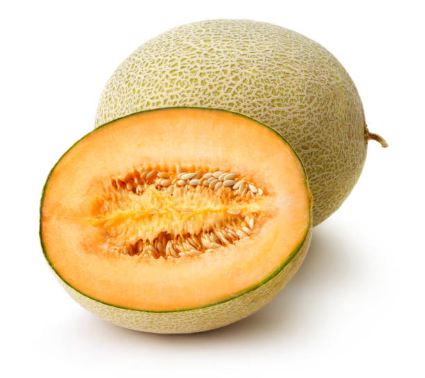
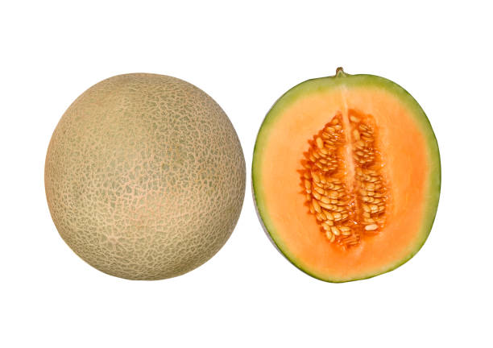
In India, muskmelons are grown in several states across different regions. Some of the major muskmelon-producing states include Uttar Pradesh, Andhra Pradesh, Karnataka, Maharashtra, Haryana, and Rajasthan.
Uttar Pradesh is one of the major states in India with a significant market share in muskmelon production.
Muskmelons, including varieties like cantaloupe, thrive in well-drained soil with good fertility. The soil pH should be in the range of 6.0 to 7.0 for optimal muskmelon growth.
Muskmelons are warm-season crops, and they grow best in regions with warm temperatures.
Proper drainage is crucial to prevent waterlogging, which can lead to root rot. Raised beds or well-drained soil helps in avoiding excess water around the roots.
After transplanting, muskmelons generally take about 70 to 90 days to mature and be ready for harvest.Proper weed control is essential to prevent competition for nutrients and water.
Muskmelon demand is higher in states like Uttarpradesh,
Maharastra,Andhra pradesh,Karnataka,Delhi.
భారతదేశంలో, సీతాఫలాలను వివిధ ప్రాంతాలలో అనేక రాష్ట్రాల్లో పండిస్తారు. ఉత్తరప్రదేశ్, ఆంధ్రప్రదేశ్, కర్నాటక, మహారాష్ట్ర, హర్యానా మరియు రాజస్థాన్ వంటి కొన్ని ప్రధాన సీతాఫలాలను ఉత్పత్తి చేసే రాష్ట్రాలు ఉన్నాయి.
సీతాఫలం ఉత్పత్తిలో గణనీయమైన మార్కెట్ వాటాను కలిగి ఉన్న భారతదేశంలోని ప్రధాన రాష్ట్రాలలో ఉత్తరప్రదేశ్ ఒకటి.
సీతాఫలం వంటి రకాలతో సహా సీతాఫలాలు బాగా ఎండిపోయిన నేలలో మంచి సంతానోత్పత్తితో వృద్ధి చెందుతాయి. సీతాఫలం సరైన పెరుగుదలకు నేల pH 6.0 నుండి 7.0 వరకు ఉండాలి.
సీతాఫలాలు వెచ్చని-కాలపు పంటలు, మరియు అవి వెచ్చని ఉష్ణోగ్రతలు ఉన్న ప్రాంతాల్లో ఉత్తమంగా పెరుగుతాయి.
నీటి ఎద్దడిని నివారించడానికి సరైన పారుదల చాలా ముఖ్యమైనది, ఇది రూట్ తెగులుకు దారితీస్తుంది. పెరిగిన పడకలు లేదా బాగా ఎండిపోయిన నేల మూలాల చుట్టూ అదనపు నీటిని నివారించడంలో సహాయపడుతుంది.
నాటిన తరువాత, సీతాఫలాలు సాధారణంగా పరిపక్వం చెందడానికి 70 నుండి 90 రోజులు పడుతుంది మరియు కోతకు సిద్ధంగా ఉంటాయి. పోషకాలు మరియు నీటి కోసం పోటీని నివారించడానికి సరైన కలుపు నియంత్రణ అవసరం.
ఉత్తరప్రదేశ్, మహారాష్ట్ర, ఆంధ్ర ప్రదేశ్, కర్నాటక, ఢిల్లీ వంటి రాష్ట్రాల్లో సీతాఫలానికి డిమాండ్ ఎక్కువ.
12. WATERMELON / 12.పుచ్చకాయ


Watermelons are warm-season fruits, and they are typically grown during the summer season in most regions.
Traditionally, states like Andhra Pradesh, Karnataka, Maharashtra, Tamil Nadu, and Uttar Pradesh have been prominent contributors to watermelon cultivation in India.
Watermelons prefer soils that are well-drained to prevent waterlogging, which can lead to root diseases. Sandy loam and loamy soils are often considered suitable for watermelon cultivation.
The ideal soil pH for watermelons is around 6.0 to 7.5. Slightly acidic to neutral soils is preferred.
Watermelons thrive in warm temperatures. The soil should be warm enough for seeds to germinate and plants to establish successfully.
Watermelons typically take 70 to 90 days from planting to harvest, depending on the variety.Regular watering is crucial, especially during dry periods. Drip irrigation or other efficient irrigation methods can be employed.
Regular watering is crucial, especially during dry periods. Drip irrigation or other efficient irrigation methods can be employed.
states like Maharashtra, Uttar Pradesh,
Andhra Pradesh, Karnataka, Tamil Nadu, and Gujarat have been significant contributors to the demand for watermelons due to their favorable growing conditions and large populations.
పుచ్చకాయలు వెచ్చని-సీజన్ పండ్లు, మరియు అవి సాధారణంగా చాలా ప్రాంతాలలో వేసవి కాలంలో పెరుగుతాయి.
సాంప్రదాయకంగా, భారతదేశంలో పుచ్చకాయ సాగులో ఆంధ్రప్రదేశ్, కర్ణాటక, మహారాష్ట్ర, తమిళనాడు మరియు ఉత్తరప్రదేశ్ వంటి రాష్ట్రాలు ప్రముఖంగా ఉన్నాయి.
పుచ్చకాయలు నీటి ఎండిపోవడాన్ని నివారించడానికి బాగా ఎండిపోయిన నేలలను ఇష్టపడతాయి, ఇది మూల వ్యాధులకు దారితీస్తుంది. ఇసుక లోమ్ మరియు లోమీ నేలలు తరచుగా పుచ్చకాయ సాగుకు అనుకూలంగా పరిగణించబడతాయి.
పుచ్చకాయలకు సరైన నేల pH 6.0 నుండి 7.5 వరకు ఉంటుంది. తటస్థ నేలలు కొద్దిగా ఆమ్లంగా ఉంటాయి.
పుచ్చకాయలు వెచ్చని ఉష్ణోగ్రతలలో వృద్ధి చెందుతాయి. విత్తనాలు మొలకెత్తడానికి మరియు మొక్కలు విజయవంతంగా స్థాపించడానికి నేల తగినంత వెచ్చగా ఉండాలి.
పుచ్చకాయలు సాధారణంగా నాటడం నుండి పంట వరకు 70 నుండి 90 రోజులు పడుతుంది, ఇది రకాన్ని బట్టి ఉంటుంది. ముఖ్యంగా పొడి కాలంలో రెగ్యులర్ నీరు త్రాగుట చాలా ముఖ్యం. బిందు సేద్యం లేదా ఇతర సమర్థవంతమైన నీటిపారుదల పద్ధతులను ఉపయోగించవచ్చు.
క్రమం తప్పకుండా నీరు త్రాగుట చాలా ముఖ్యం, ముఖ్యంగా పొడి కాలంలో. బిందు సేద్యం లేదా ఇతర సమర్థవంతమైన నీటిపారుదల పద్ధతులను ఉపయోగించవచ్చు.
మహారాష్ట్ర, ఉత్తరప్రదేశ్, ఆంధ్రప్రదేశ్, కర్నాటక, తమిళనాడు మరియు గుజరాత్ వంటి రాష్ట్రాలు పుచ్చకాయల యొక్క అనుకూలమైన పెరుగుతున్న పరిస్థితులు మరియు అధిక జనాభా కారణంగా డిమాండ్లో గణనీయమైన దోహదపడ్డాయి.
13. PAPAYA / 13.బొప్పాయి


Papaya is a tropical fruit that can be grown throughout the year in regions with a warm and tropical climate.
Certain states have been known for significant papaya cultivation due to favorable climatic conditions like
Andhra Pradesh,Gujarat,
Maharastra,Karnataka,
Tamil Nadu.
Papayas prefer soils that are well-drained to prevent waterlogging, which can lead to root diseases. Sandy loam and loamy soils are generally suitable.
The ideal soil pH for papayas is between 6.0 and 6.5. Slightly acidic to neutral soils are preferred. Proper pH levels ensure optimal nutrient availability to the plants.
Papayas are typically ready for harvest 9 to 12 months after planting, depending on the variety and growing conditions.
Papaya Demand is Higher in states like Andhra Pradesh,Gujarat,Karnataka,
Tamil Nadu,,Maharastra.
బొప్పాయి ఒక ఉష్ణమండల పండు, ఇది వెచ్చని మరియు ఉష్ణమండల వాతావరణం ఉన్న ప్రాంతాల్లో ఏడాది పొడవునా పండించవచ్చు.
ఆంధ్రప్రదేశ్, గుజరాత్, మహారాష్ట్ర, కర్నాటక, తమిళనాడు వంటి అనుకూల వాతావరణ పరిస్థితుల కారణంగా కొన్ని రాష్ట్రాలు బొప్పాయి సాగుకు ప్రసిద్ధి చెందాయి.
నీటి ఎద్దడిని నివారించడానికి బొప్పాయిలు బాగా ఎండిపోయిన నేలలను ఇష్టపడతాయి, ఇది మూల వ్యాధులకు దారితీస్తుంది. ఇసుక మరియు లోమీ నేలలు సాధారణంగా అనుకూలం.
బొప్పాయిలకు సరైన నేల pH 6.0 మరియు 6.5 మధ్య ఉంటుంది. తటస్థ నేలలు కొద్దిగా ఆమ్లంగా ఉంటాయి. సరైన pH స్థాయిలు మొక్కలకు సరైన పోషక లభ్యతను నిర్ధారిస్తాయి.
బొప్పాయిలు సాధారణంగా నాటిన 9 నుండి 12 నెలల తర్వాత వివిధ రకాల మరియు పెరుగుతున్న పరిస్థితులపై ఆధారపడి కోతకు సిద్ధంగా ఉంటాయి.
ఆంధ్రప్రదేశ్, గుజరాత్, కర్నాటక, తమిళనాడు, మహారాష్ట్ర వంటి రాష్ట్రాల్లో బొప్పాయి డిమాండ్ ఎక్కువగా ఉంది.
14. SAPOTA / 14.సపోటా


Sapota, also known as chikoo or sapodilla, is a tropical fruit that can be grown in regions with a warm and tropical climate. It does not have a strict growing season and can be cultivated throughout the year in areas where temperatures do not drop significantly.
Sapota plants thrive in temperatures between 60°F to 100°F (15°C to 38°C).
Chikoo, is grown in various states in India like Gujarat,
Andhra Pradesh,Maharastra,Karnataka,
Tamil Nadu.
Sapota plants prefer soils that are well-drained to prevent waterlogging, which can lead to root diseases. Sandy loam and loamy soils with good drainage properties are generally suitable.
The ideal soil pH for sapota cultivation is between 6.0 and 7.5. Slightly acidic to neutral soils are preferred.
Depending on the variety and growing conditions, sapota trees usually start bearing fruit within 3 to 5 years after planting.
Usually Sapota demand is high in states like Gujarat,Maharashtra,
Tamil Nadu,Karnataka.
సపోటా, చికూ లేదా సపోడిల్లా అని కూడా పిలుస్తారు, ఇది ఉష్ణమండల పండు, దీనిని వెచ్చని మరియు ఉష్ణమండల వాతావరణం ఉన్న ప్రాంతాల్లో పెంచవచ్చు. ఇది కఠినమైన పెరుగుతున్న సీజన్ను కలిగి ఉండదు మరియు ఉష్ణోగ్రతలు గణనీయంగా తగ్గని ప్రాంతాల్లో ఏడాది పొడవునా సాగు చేయవచ్చు.
సపోటా మొక్కలు 60°F నుండి 100°F (15°C నుండి 38°C) మధ్య ఉష్ణోగ్రతలలో వృద్ధి చెందుతాయి.
చీకూ, గుజరాత్, ఆంధ్రప్రదేశ్, మహారాష్ట్ర, కర్నాటక, తమిళనాడు వంటి భారతదేశంలోని వివిధ రాష్ట్రాల్లో పండిస్తారు.
సపోటా మొక్కలు నీటి ఎద్దడిని నివారించడానికి బాగా ఎండిపోయిన నేలలను ఇష్టపడతాయి, ఇది వేరు వ్యాధులకు దారితీస్తుంది. మంచి పారుదల లక్షణాలు కలిగిన ఇసుక లోమ్ మరియు లోమీ నేలలు సాధారణంగా అనుకూలంగా ఉంటాయి.
సపోటా సాగుకు సరైన నేల pH 6.0 మరియు 7.5 మధ్య ఉంటుంది. తటస్థ నేలలు కొద్దిగా ఆమ్లంగా ఉంటాయి.
వివిధ రకాల మరియు పెరుగుతున్న పరిస్థితులపై ఆధారపడి, సపోటా చెట్లు సాధారణంగా నాటిన 3 నుండి 5 సంవత్సరాలలో ఫలాలను ఇవ్వడం ప్రారంభిస్తాయి.
సాధారణంగా గుజరాత్, మహారాష్ట్ర, తమిళనాడు, కర్నాటక వంటి రాష్ట్రాల్లో సపోటాకు డిమాండ్ ఎక్కువగా ఉంటుంది.
15. APPLE / 15.ఆపిల్
 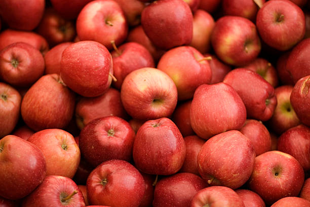
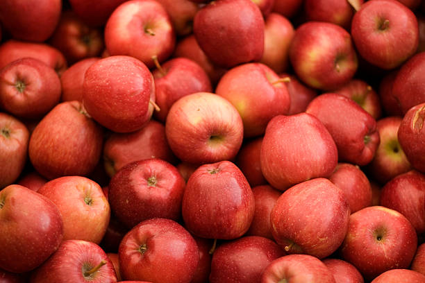
Apple trees typically have a chilling requirement, and the timing of planting and fruiting.This chilling requirement is measured in chilling hours, which are hours of winter temperatures between 32°F (0°C) and 45°F (7°C).
The state of Himachal Pradesh has been a significant contributor to apple cultivation in India, particularly in regions like Shimla, Kullu, and Kinnaur. Himachal Pradesh is known for its favorable climate and altitude, creating suitable conditions for high-quality apple production.
Jammu and Kashmir is another state with notable apple cultivation, and districts like Srinagar, Anantnag, and Baramulla are known for their apple orchards.
Apples prefer soils that are well-drained to prevent waterlogging, which can lead to root diseases. Sandy loam and loamy soils are generally suitable.
The ideal soil pH for apples is between 6.0 and 7.0. Slightly acidic to neutral soils are preferred. Proper pH levels ensure optimal nutrient availability to the plants.
Apples usually start bearing fruit 3 to 5 years after planting, but the exact timing depends on factors such as apple variety, rootstock used, and local climate.
States with higher demand for apples in India include Maharashtra,
Delhi,Uttarpradesh,
Karnataka,Gujarat.
యాపిల్ చెట్లకు సాధారణంగా శీతలీకరణ అవసరం మరియు నాటడం మరియు ఫలాలు కాస్తాయి. ఈ శీతలీకరణ ఆవశ్యకతను శీతలీకరణ గంటలలో కొలుస్తారు, ఇవి 32°F (0°C) మరియు 45°F (7°C) మధ్య ఉండే శీతాకాలపు ఉష్ణోగ్రతలు.
భారతదేశంలో, ముఖ్యంగా సిమ్లా, కులు మరియు కిన్నౌర్ వంటి ప్రాంతాలలో యాపిల్ సాగులో హిమాచల్ ప్రదేశ్ రాష్ట్రం గణనీయమైన సహకారాన్ని అందిస్తోంది. హిమాచల్ ప్రదేశ్ అనుకూలమైన వాతావరణం మరియు ఎత్తుకు ప్రసిద్ధి చెందింది, అధిక-నాణ్యత ఆపిల్ ఉత్పత్తికి తగిన పరిస్థితులను సృష్టిస్తుంది.
జమ్మూ మరియు కాశ్మీర్ చెప్పుకోదగ్గ ఆపిల్ సాగులో ఉన్న మరొక రాష్ట్రం, మరియు శ్రీనగర్, అనంతనాగ్ మరియు బారాముల్లా వంటి జిల్లాలు ఆపిల్ తోటలకు ప్రసిద్ధి చెందాయి.
నీటి ఎద్దడిని నివారించడానికి యాపిల్స్ బాగా ఎండిపోయిన నేలలను ఇష్టపడతాయి, ఇది మూల వ్యాధులకు దారితీస్తుంది. ఇసుక మరియు లోమీ నేలలు సాధారణంగా అనుకూలం.
యాపిల్స్కు సరైన నేల pH 6.0 మరియు 7.0 మధ్య ఉంటుంది. తటస్థ నేలలు కొద్దిగా ఆమ్లంగా ఉంటాయి. సరైన pH స్థాయిలు మొక్కలకు సరైన పోషక లభ్యతను నిర్ధారిస్తాయి.
యాపిల్స్ సాధారణంగా నాటిన 3 నుండి 5 సంవత్సరాల తర్వాత ఫలాలను ఇవ్వడం ప్రారంభిస్తాయి, అయితే ఖచ్చితమైన సమయం ఆపిల్ రకం, ఉపయోగించిన వేరు కాండం మరియు స్థానిక వాతావరణం వంటి అంశాలపై ఆధారపడి ఉంటుంది.
భారతదేశంలో ఆపిల్లకు ఎక్కువ డిమాండ్ ఉన్న రాష్ట్రాల్లో మహారాష్ట్ర, ఢిల్లీ, ఉత్తరప్రదేశ్, కర్ణాటక, గుజరాత్ ఉన్నాయి.
16. LEMON / 16.నిమ్మకాయ
 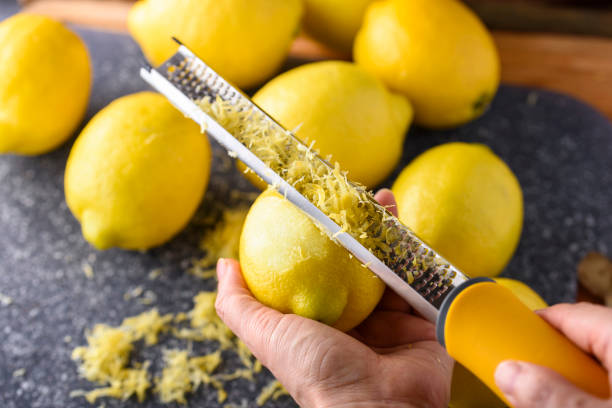
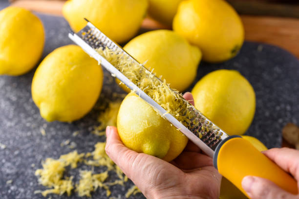
Lemons are grown throughout the year in regions with a warm and subtropical to tropical climate. lemons have the ability to produce fruit continuously under suitable conditions.
Lemon trees prefer temperatures between 70°F to 100°F (21°C to 38°C). While they can tolerate some temperature variations, they are most productive in a warm environment.
Traditionally, certain states in India have been known for significant lemon cultivation and production like Uttar Pradesh,
Maharastra,Gujarat,Rajasthan,
Tamil Nadu.
Lemons prefer soils that are well-drained to prevent waterlogging, which can lead to root diseases. Sandy loam and loamy soils with good drainage properties are generally suitable.
The ideal soil pH for lemon cultivation is between 6.0 and 7.5. Slightly acidic to neutral soils are preferred. Proper pH levels ensure optimal nutrient availability to the plants.
Lemons usually start bearing fruit within 2 to 3 years after planting, but the exact timing depends on factors such as the lemon variety, rootstock used, and local climate.
States with higher demand for lemons in India include Maharastra,Uttarpradesh
,Delhi,Gujarat,Tamil Nadu.
నిమ్మకాయలు వెచ్చని మరియు ఉపఉష్ణమండల నుండి ఉష్ణమండల వాతావరణం ఉన్న ప్రాంతాలలో ఏడాది పొడవునా పెరుగుతాయి. నిమ్మకాయలు అనువైన పరిస్థితులలో నిరంతరం ఫలాలను ఉత్పత్తి చేయగల సామర్థ్యాన్ని కలిగి ఉంటాయి.
నిమ్మ చెట్లు 70°F నుండి 100°F (21°C నుండి 38°C) మధ్య ఉష్ణోగ్రతలను ఇష్టపడతాయి. వారు కొన్ని ఉష్ణోగ్రత వైవిధ్యాలను తట్టుకోగలిగినప్పటికీ, అవి వెచ్చని వాతావరణంలో అత్యంత ఉత్పాదకతను కలిగి ఉంటాయి.
సాంప్రదాయకంగా, భారతదేశంలోని కొన్ని రాష్ట్రాలు ఉత్తరప్రదేశ్, మహారాష్ట్ర, గుజరాత్, రాజస్థాన్, తమిళనాడు వంటి ముఖ్యమైన నిమ్మ సాగు మరియు ఉత్పత్తికి ప్రసిద్ధి చెందాయి.
నిమ్మకాయలు నీటి ఎండిపోవడాన్ని నివారించడానికి బాగా ఎండిపోయిన నేలలను ఇష్టపడతాయి, ఇది మూల వ్యాధులకు దారితీస్తుంది. మంచి పారుదల లక్షణాలు కలిగిన ఇసుక లోమ్ మరియు లోమీ నేలలు సాధారణంగా అనుకూలంగా ఉంటాయి.
నిమ్మ సాగుకు అనువైన నేల pH 6.0 మరియు 7.5 మధ్య ఉంటుంది. తటస్థ నేలలు కొద్దిగా ఆమ్లంగా ఉంటాయి. సరైన pH స్థాయిలు మొక్కలకు సరైన పోషక లభ్యతను నిర్ధారిస్తాయి.
నిమ్మకాయలు సాధారణంగా నాటిన 2 నుండి 3 సంవత్సరాలలో ఫలాలను ఇవ్వడం ప్రారంభిస్తాయి, అయితే ఖచ్చితమైన సమయం నిమ్మకాయ రకం, ఉపయోగించిన వేరు కాండం మరియు స్థానిక వాతావరణం వంటి అంశాలపై ఆధారపడి ఉంటుంది.
భారతదేశంలో నిమ్మకాయలకు ఎక్కువ డిమాండ్ ఉన్న రాష్ట్రాల్లో మహారాష్ట్ర, ఉత్తరప్రదేశ్, ఢిల్లీ, గుజరాత్, తమిళనాడు ఉన్నాయి.
17. ORANGE / 17.ఆరెంజ్
 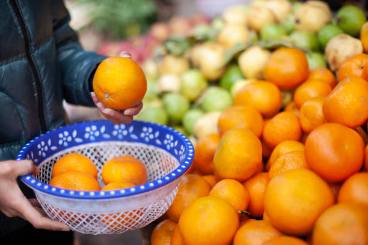
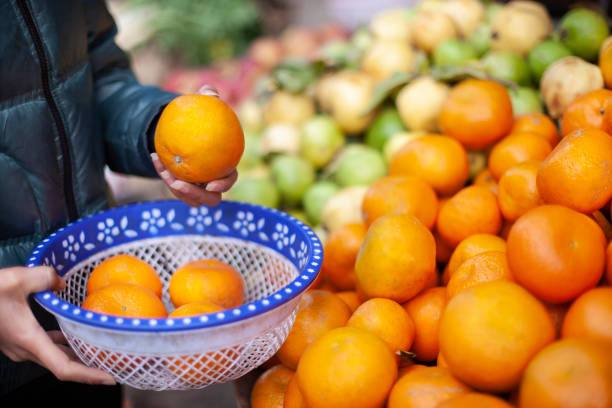
Orange trees generally bear fruit in the winter months in regions with a temperate climate. The fruiting season for oranges is typically during the winter, which is also known as the harvesting season.
In temperate climates, such as those found in many citrus-growing regions, oranges are typically harvested during the winter months. This is when the fruit reaches maturity and is ready for picking.
Traditionally, certain states have been known for significant orange cultivation and production like
Maharastra,Uttarpradesh,
Assam,MadhyaPradesh.
Oranges prefer soils that are well-drained to prevent waterlogging, which can lead to root diseases. Sandy loam and loamy soils with good drainage properties are generally suitable.
The ideal soil pH for orange cultivation is between 6.0 and 7.5. Slightly acidic to neutral soils are preferred. Proper pH levels ensure optimal nutrient availability to the plants.
Oranges thrive in subtropical to tropical climates. They are sensitive to frost, and freezing temperatures can damage the trees.
Oranges usually start bearing fruit within 2 to 4 years after planting, but the exact timing depends on factors such as the orange variety, rootstock used, and local climate.
States with higher demand for oranges in India include Maharastra,Uttarpradesh,
Assam,MadhyaPradesh,
Tamilnadu.
ఆరెంజ్ చెట్లు సాధారణంగా సమశీతోష్ణ వాతావరణం ఉన్న ప్రాంతాల్లో శీతాకాలంలో ఫలాలను ఇస్తాయి. నారింజ పండు సీజన్ సాధారణంగా శీతాకాలంలో ఉంటుంది, దీనిని కోత కాలం అని కూడా అంటారు.
సమశీతోష్ణ వాతావరణంలో, అనేక సిట్రస్-పెరుగుతున్న ప్రాంతాలలో కనిపించేవి, నారింజ సాధారణంగా శీతాకాలంలో పండించబడతాయి. ఈ సమయంలో పండు పరిపక్వతకు చేరుకుంటుంది మరియు కోయడానికి సిద్ధంగా ఉంటుంది.
సాంప్రదాయకంగా, మహారాష్ట్ర, ఉత్తరప్రదేశ్, అస్సాం, మధ్యప్రదేశ్ వంటి కొన్ని రాష్ట్రాలు గణనీయమైన నారింజ సాగు మరియు ఉత్పత్తికి ప్రసిద్ధి చెందాయి.
నారింజలు నీటి ఎండిపోవడాన్ని నివారించడానికి బాగా ఎండిపోయిన నేలలను ఇష్టపడతాయి, ఇది మూల వ్యాధులకు దారితీస్తుంది. మంచి పారుదల లక్షణాలు కలిగిన ఇసుక లోమ్ మరియు లోమీ నేలలు సాధారణంగా అనుకూలంగా ఉంటాయి.
నారింజ సాగుకు సరైన నేల pH 6.0 మరియు 7.5 మధ్య ఉంటుంది. తటస్థ నేలలు కొద్దిగా ఆమ్లంగా ఉంటాయి. సరైన pH స్థాయిలు మొక్కలకు సరైన పోషక లభ్యతను నిర్ధారిస్తాయి.
నారింజలు ఉపఉష్ణమండల నుండి ఉష్ణమండల వాతావరణంలో వృద్ధి చెందుతాయి. అవి మంచుకు సున్నితంగా ఉంటాయి మరియు గడ్డకట్టే ఉష్ణోగ్రతలు చెట్లను దెబ్బతీస్తాయి.
నారింజ సాధారణంగా నాటిన 2 నుండి 4 సంవత్సరాలలో ఫలాలను ఇవ్వడం ప్రారంభిస్తుంది, అయితే ఖచ్చితమైన సమయం నారింజ రకం, ఉపయోగించిన వేరు కాండం మరియు స్థానిక వాతావరణం వంటి అంశాలపై ఆధారపడి ఉంటుంది.
భారతదేశంలో నారింజకు ఎక్కువ డిమాండ్ ఉన్న రాష్ట్రాల్లో మహారాష్ట్ర, ఉత్తరప్రదేశ్, అస్సాం, మధ్యప్రదేశ్ తమిళనాడు ఉన్నాయి.
18. SWEETLIME / 18.బత్తాయిపండు
 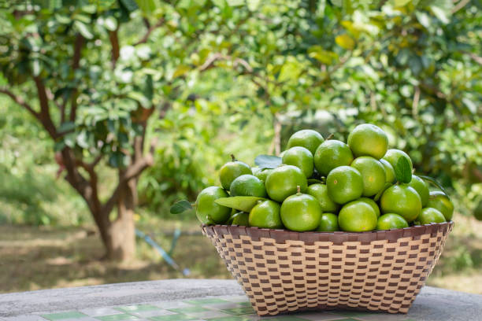
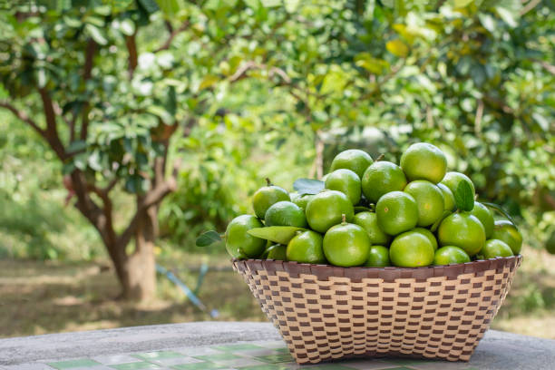
Sweetlime, also known as sweet lemon or mosambi, is generally grown and harvested during specific seasons in various regions.
Sweetlime trees typically bear fruit twice a year in many regions February to April and August to October.
States known for significant sweetlime cultivation in India include Maharastra,Andhra Pradesh,Karnataka,Madhya Pradesh,Telangana.
Sweetlime trees prefer soils that are well-drained to prevent waterlogging, which can lead to root diseases. Sandy loam and loamy soils with good drainage properties are generally suitable.
The ideal soil pH for sweetlime cultivation is between 6.0 and 7.5. Slightly acidic to neutral soils are preferred. Proper pH levels ensure optimal nutrient availability to the plants.
Sweetlime trees thrive in subtropical to tropical climates. They are sensitive to frost, and freezing temperatures can damage the trees.
Sweetlime trees usually start bearing fruit within 3 to 5 years after planting, but the exact timing depends on factors such as the sweetlime variety, rootstock used, and local climate.
స్వీట్లైమ్, స్వీట్ లెమన్ లేదా మొసాంబి అని కూడా పిలుస్తారు, సాధారణంగా వివిధ ప్రాంతాలలో నిర్దిష్ట సీజన్లలో పండిస్తారు మరియు పండిస్తారు.
స్వీట్లైమ్ చెట్లు సాధారణంగా ఫిబ్రవరి నుండి ఏప్రిల్ మరియు ఆగస్టు నుండి అక్టోబర్ వరకు అనేక ప్రాంతాలలో సంవత్సరానికి రెండుసార్లు ఫలాలను ఇస్తాయి.
భారతదేశంలో ముఖ్యమైన స్వీట్లైమ్ సాగుకు ప్రసిద్ధి చెందిన రాష్ట్రాలు మహారాష్ట్ర, ఆంధ్రప్రదేశ్, కర్నాటక, మధ్యప్రదేశ్, తెలంగాణ.
స్వీట్లైమ్ చెట్లు నీటి ఎండిపోవడాన్ని నివారించడానికి బాగా ఎండిపోయిన నేలలను ఇష్టపడతాయి, ఇది మూల వ్యాధులకు దారితీస్తుంది. మంచి పారుదల లక్షణాలు కలిగిన ఇసుక లోమ్ మరియు లోమీ నేలలు సాధారణంగా అనుకూలంగా ఉంటాయి.
స్వీట్లైమ్ సాగుకు అనువైన నేల pH 6.0 మరియు 7.5 మధ్య ఉంటుంది. తటస్థ నేలలు కొద్దిగా ఆమ్లంగా ఉంటాయి. సరైన pH స్థాయిలు మొక్కలకు సరైన పోషక లభ్యతను నిర్ధారిస్తాయి.
స్వీట్లైమ్ చెట్లు ఉపఉష్ణమండల నుండి ఉష్ణమండల వాతావరణాలలో వృద్ధి చెందుతాయి. అవి మంచుకు సున్నితంగా ఉంటాయి మరియు గడ్డకట్టే ఉష్ణోగ్రతలు చెట్లను దెబ్బతీస్తాయి.
స్వీట్లైమ్ చెట్లు సాధారణంగా నాటిన 3 నుండి 5 సంవత్సరాలలో ఫలాలను ఇవ్వడం ప్రారంభిస్తాయి, అయితే ఖచ్చితమైన సమయం స్వీట్లైమ్ రకం, ఉపయోగించిన వేరు కాండం మరియు స్థానిక వాతావరణం వంటి అంశాలపై ఆధారపడి ఉంటుంది.
19. POMEGRANATE / 19.దానిమ్మపండు
 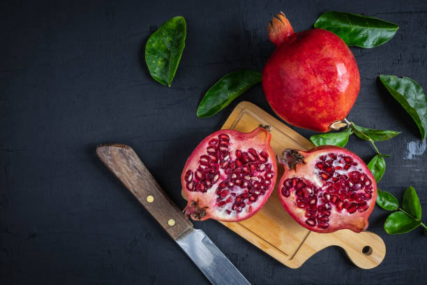
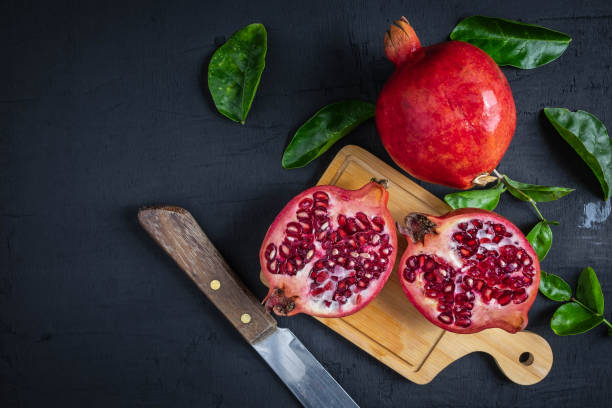
Pomegranates are typically grown in subtropical and tropical climates, and their growth and fruiting are influenced by the local climate and seasonal variations.
Maharashtra has been a leading state in India for pomegranate cultivation, with Nashik and Sangli districts being prominent contributors.
Pomegranates prefer well-drained soils to prevent waterlogging, which can be detrimental to the roots. Sandy loam and loamy soils are generally suitable, providing a good balance of drainage and water retention.
The ideal soil pH for pomegranates is in the range of 6.0 to 7.0. Pomegranates can tolerate slightly acidic to slightly alkaline soils. Proper pH levels are essential for nutrient availability to the plants.
Pomegranate trees may start bearing fruit within 2 to 3 years after planting, but significant yields are often achieved after 3 to 5 years. Full commercial production may take several more years.
States for Higher demand for Pomegranate in india include Maharastra,Tamil Nadu,Uttar Pradesh,Telangana.
దానిమ్మలు సాధారణంగా ఉపఉష్ణమండల మరియు ఉష్ణమండల వాతావరణంలో పెరుగుతాయి మరియు వాటి పెరుగుదల మరియు ఫలాలు స్థానిక వాతావరణం మరియు కాలానుగుణ వైవిధ్యాల ద్వారా ప్రభావితమవుతాయి.
దానిమ్మ సాగులో భారతదేశంలో మహారాష్ట్ర అగ్రగామిగా ఉంది, నాసిక్ మరియు సాంగ్లీ జిల్లాలు ప్రముఖంగా ఉన్నాయి.
నీటి ఎద్దడిని నివారించడానికి దానిమ్మలు బాగా ఎండిపోయిన నేలలను ఇష్టపడతాయి, ఇది మూలాలకు హానికరం. ఇసుక లోమ్ మరియు లోమీ నేలలు సాధారణంగా అనుకూలంగా ఉంటాయి, ఇది మంచి నీటి పారుదల మరియు నీటి నిలుపుదలని అందిస్తుంది.
దానిమ్మపండుకు సరైన నేల pH 6.0 నుండి 7.0 వరకు ఉంటుంది. దానిమ్మలు కొద్దిగా ఆమ్ల నుండి కొద్దిగా ఆల్కలీన్ నేలలను తట్టుకోగలవు. మొక్కలకు పోషకాల లభ్యత కోసం సరైన pH స్థాయిలు అవసరం.
దానిమ్మ చెట్లు నాటిన 2 నుండి 3 సంవత్సరాలలోపు ఫలాలను ఇవ్వడం ప్రారంభించవచ్చు, కానీ 3 నుండి 5 సంవత్సరాల తర్వాత గణనీయమైన దిగుబడిని తరచుగా సాధించవచ్చు. పూర్తి వాణిజ్య ఉత్పత్తికి మరికొన్ని సంవత్సరాలు పట్టవచ్చు.
భారతదేశంలో దానిమ్మపండుకు ఎక్కువ డిమాండ్ ఉన్న రాష్ట్రాల్లో మహారాష్ట్ర, తమిళనాడు, ఉత్తరప్రదేశ్, తెలంగాణ ఉన్నాయి.
20. GUAVA / 20.జామపండు
 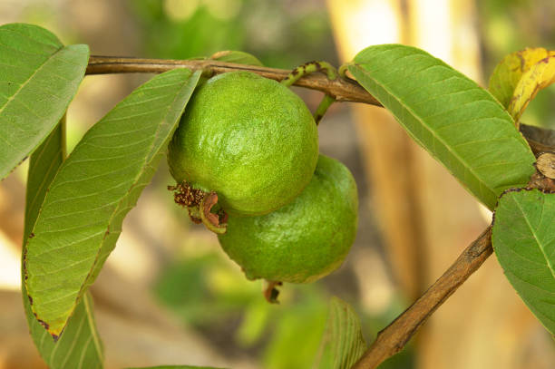
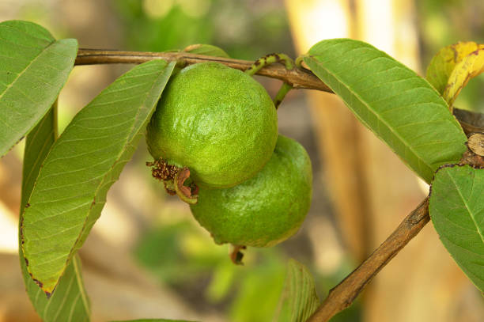
Guava is a tropical and subtropical fruit that can be cultivated throughout the year in regions with suitable climates.
Guava is grown in a range of states, and certain regions are known for significant cultivation and trade. Here are some states in India where guava cultivation is notable like Uttarpradesh,
Bihar,Maharastra,
Gujarat,Westbengal.
Guava plants prefer well-drained soils to prevent waterlogging, which can be detrimental to root health. Sandy loam and loamy soils with good drainage are generally considered ideal.
Guava trees tolerate a wide range of soil pH, but they generally prefer slightly acidic to neutral soils. A pH range of 5.5 to 7.0 is considered suitable.
Guava seedlings are typically transplanted to the main orchard when they are around 6-12 months old. Guava trees can start flowering and fruiting within 2 to 3 years after planting, but full commercial production may take several more years.
States for Higher demand for Guava in india include
Maharastra,Bihar,
Uttar Pradesh,Westbengal.
జామ అనేది ఉష్ణమండల మరియు ఉపఉష్ణమండల పండు, దీనిని అనుకూలమైన వాతావరణం ఉన్న ప్రాంతాల్లో ఏడాది పొడవునా సాగు చేయవచ్చు.
జామను అనేక రాష్ట్రాల్లో పండిస్తారు మరియు కొన్ని ప్రాంతాలు గణనీయమైన సాగు మరియు వాణిజ్యానికి ప్రసిద్ధి చెందాయి. ఉత్తరప్రదేశ్, బీహార్, మహారాష్ట్ర, గుజరాత్, పశ్చిమబెంగాల్ వంటి భారతదేశంలోని కొన్ని రాష్ట్రాలు జామ సాగులో ప్రసిద్ధి చెందాయి.
నీటి ఎద్దడిని నివారించడానికి జామ మొక్కలు బాగా ఎండిపోయిన నేలలను ఇష్టపడతాయి, ఇది రూట్ ఆరోగ్యానికి హానికరం. మంచి పారుదల ఉన్న ఇసుక లోమ్ మరియు లోమీ నేలలు సాధారణంగా ఆదర్శంగా పరిగణించబడతాయి.
జామ చెట్లు విస్తృత శ్రేణి నేల pHని తట్టుకోగలవు, అయితే అవి సాధారణంగా తటస్థ నేలలకు కొద్దిగా ఆమ్లాన్ని ఇష్టపడతాయి. 5.5 నుండి 7.0 pH పరిధి తగినదిగా పరిగణించబడుతుంది.
జామ మొక్కలు సాధారణంగా 6-12 నెలల వయస్సులో ఉన్నప్పుడు ప్రధాన తోటలో నాటబడతాయి. జామ చెట్లు నాటిన తర్వాత 2 నుండి 3 సంవత్సరాలలోపు పుష్పించడం మరియు ఫలాలు ఇవ్వడం ప్రారంభించవచ్చు, అయితే పూర్తి వాణిజ్య ఉత్పత్తికి మరికొన్ని సంవత్సరాలు పట్టవచ్చు.
భారతదేశంలో జామకు అధిక డిమాండ్ ఉన్న రాష్ట్రాల్లో మహారాష్ట్ర, బీహార్, ఉత్తరప్రదేశ్, పశ్చిమబెంగాల్ ఉన్నాయి.
21. MANGO / 21.మామిడిపండు
 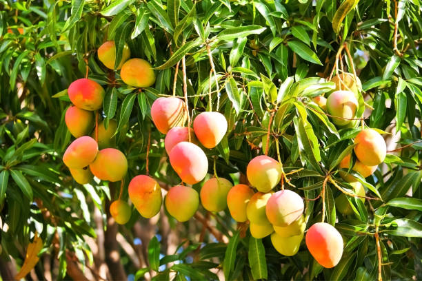
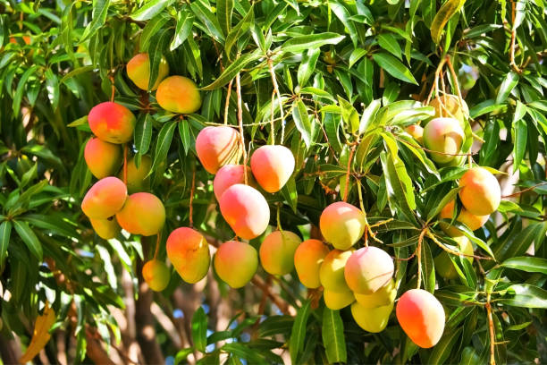
Mangoes are tropical fruits, and their cultivation is influenced by the specific climate conditions of tropical and subtropical regions. The season for mango cultivation and harvesting can vary based on the specific variety of mango, as well as the geographic location.
Mangoes are grown in Range of States like Uttarpradesh,Andhra pradesh,Telangana,
Maharastra,Gujarat,Bihar,
Westbengal
Mango trees prefer well-drained soils to prevent waterlogging, which can be detrimental to root health. Sandy loam and loamy soils with good drainage are generally considered ideal for mango cultivation.
The ideal soil pH for mango cultivation is in the range of 5.5 to 7.5. Mango trees can tolerate slightly acidic to slightly alkaline soils.
Mango seedlings are typically transplanted to the main orchard when they are around 6-12 months old. Mango trees can start flowering and fruiting within 3 to 5 years after planting, but full commercial production may take several more years.
States for Higher demand for Mango in india include Maharashtra,Delhi and National Capital Region,
Uttar Pradesh,Gujarat,West Bengal.
మామిడి పండ్లు ఉష్ణమండల పండ్లు, మరియు వాటి సాగు ఉష్ణమండల మరియు ఉపఉష్ణమండల ప్రాంతాల యొక్క నిర్దిష్ట వాతావరణ పరిస్థితుల ద్వారా ప్రభావితమవుతుంది. మామిడి సాగు మరియు కోత కోసం సీజన్ నిర్దిష్ట మామిడి రకం, అలాగే భౌగోళిక స్థానం ఆధారంగా మారవచ్చు.
ఉత్తరప్రదేశ్, ఆంధ్ర ప్రదేశ్, తెలంగాణ, మహారాష్ట్ర, గుజరాత్, బీహార్, పశ్చిమ బెంగాల్ వంటి రాష్ట్రాల పరిధిలో మామిడి పండిస్తారు.
నీటి ఎద్దడిని నివారించడానికి మామిడి చెట్లు బాగా ఎండిపోయిన నేలలను ఇష్టపడతాయి, ఇది రూట్ ఆరోగ్యానికి హానికరం. మంచి నీటి పారుదల ఉన్న ఇసుక లోమ్ మరియు లోమీ నేలలు సాధారణంగా మామిడి సాగుకు అనువైనవిగా పరిగణించబడతాయి.
మామిడి సాగుకు అనువైన నేల pH 5.5 నుండి 7.5 వరకు ఉంటుంది. మామిడి చెట్లు కొద్దిగా ఆమ్ల నుండి కొద్దిగా క్షార నేలలను తట్టుకోగలవు.
మామిడి మొలకలు సాధారణంగా 6-12 నెలల వయస్సులో ఉన్నప్పుడు ప్రధాన తోటలో నాటబడతాయి. మామిడి చెట్లు నాటిన తర్వాత 3 నుండి 5 సంవత్సరాలలోపు పుష్పించడం మరియు ఫలాలు ఇవ్వడం ప్రారంభించవచ్చు, అయితే పూర్తి వాణిజ్య ఉత్పత్తికి మరికొన్ని సంవత్సరాలు పట్టవచ్చు.
భారతదేశంలో మామిడికి ఎక్కువ డిమాండ్ ఉన్న రాష్ట్రాల్లో మహారాష్ట్ర, ఢిల్లీ మరియు జాతీయ రాజధాని ప్రాంతం, ఉత్తర ప్రదేశ్, గుజరాత్, పశ్చిమ బెంగాల్ ఉన్నాయి.

.jpg)
.jpg) 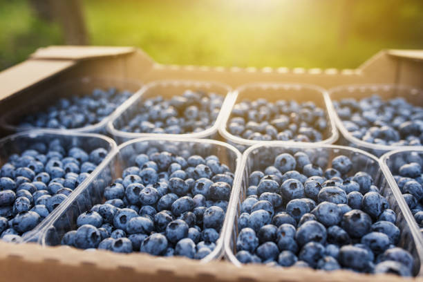
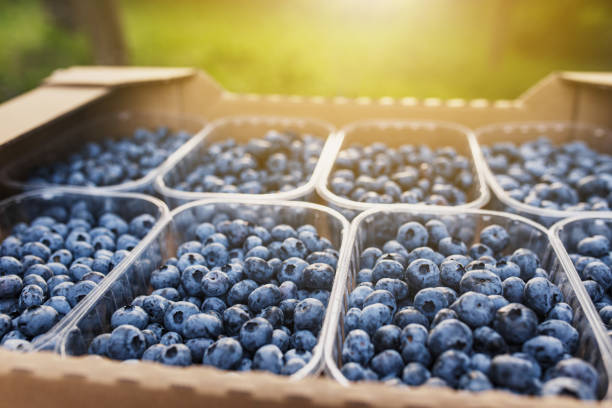